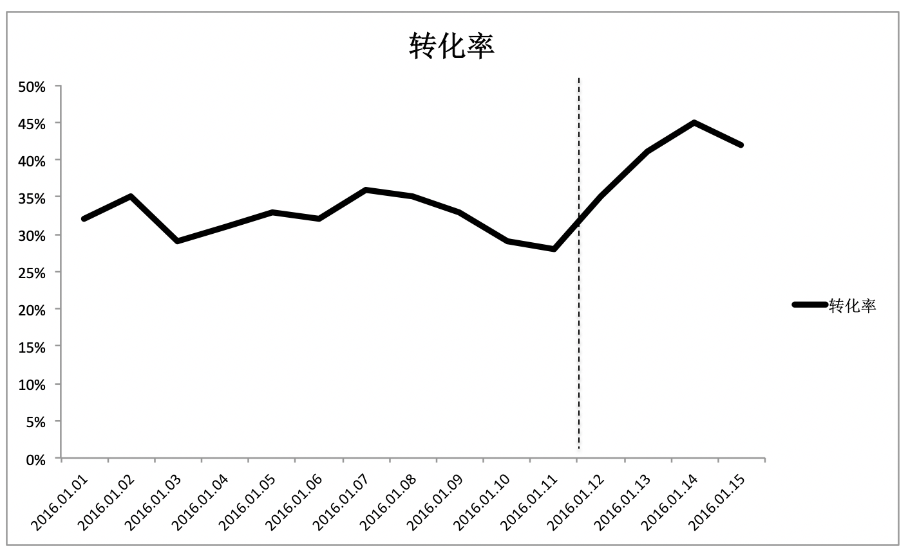
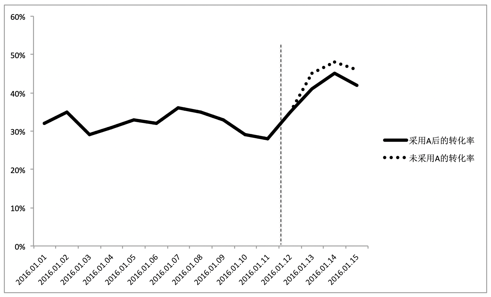
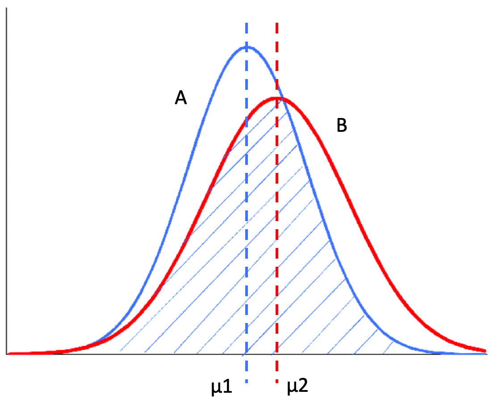
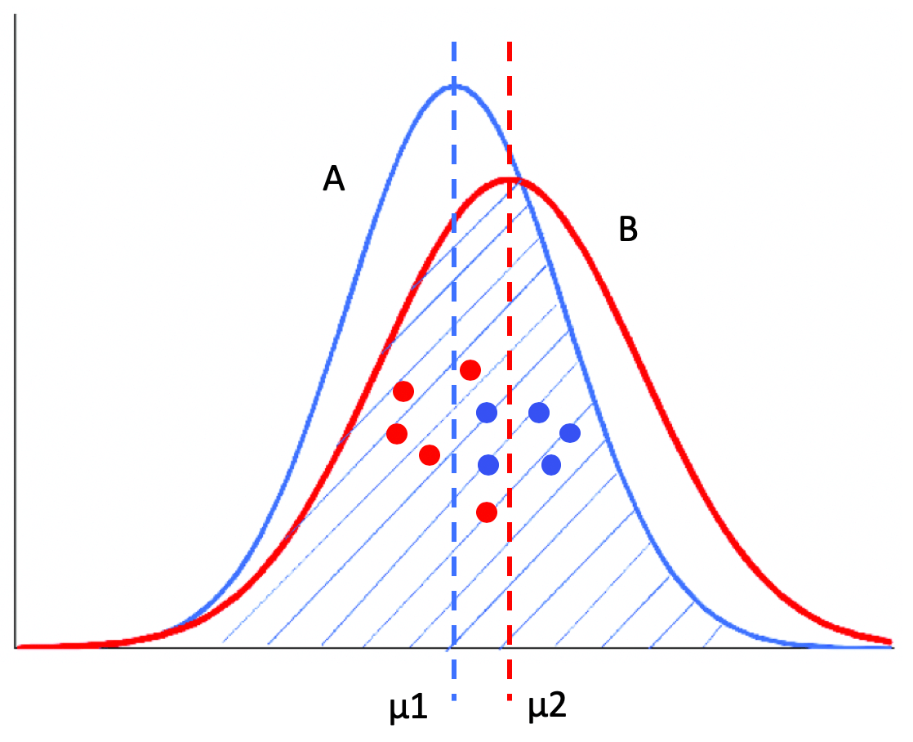

- 01 二进制：不了解计算机的源头，你学什么编程.md
- 02 余数：原来取余操作本身就是个哈希函数.md
- 03 迭代法：不用编程语言的自带函数，你会如何计算平方根？.md
- 04 数学归纳法：如何用数学归纳提升代码的运行效率？.md
- 05 递归（上）：泛化数学归纳，如何将复杂问题简单化？.md
- 06 递归（下）：分而治之，从归并排序到MapReduce.md
- 07 排列：如何让计算机学会“田忌赛马”？.md
- 08 组合：如何让计算机安排世界杯的赛程？.md
- 09 动态规划（上）：如何实现基于编辑距离的查询推荐？.md
- 10 动态规划（下）：如何求得状态转移方程并进行编程实现？.md
- 11 树的深度优先搜索（上）：如何才能高效率地查字典？.md
- 12 树的深度优先搜索（下）：如何才能高效率地查字典？.md
- 13 树的广度优先搜索（上）：人际关系的六度理论是真的吗？.md
- 14 树的广度优先搜索（下）：为什么双向广度优先搜索的效率更高？.md
- 15 从树到图：如何让计算机学会看地图？.md
- 16 时间和空间复杂度（上）：优化性能是否只是“纸上谈兵”？.md
- 17 时间和空间复杂度（下）：如何使用六个法则进行复杂度分析？.md
- 18 总结课：数据结构、编程语句和基础算法体现了哪些数学思想？.md
- 19 概率和统计：编程为什么需要概率和统计？.md
- 20 概率基础（上）：一篇文章帮你理解随机变量、概率分布和期望值.md
- 21 概率基础（下）：联合概率、条件概率和贝叶斯法则，这些概率公式究竟能做什么？.md
- 22 朴素贝叶斯：如何让计算机学会自动分类？.md
- 23 文本分类：如何区分特定类型的新闻？.md
- 24 语言模型：如何使用链式法则和马尔科夫假设简化概率模型？.md
- 25 马尔科夫模型：从PageRank到语音识别，背后是什么模型在支撑？.md
- 26 信息熵：如何通过几个问题，测出你对应的武侠人物？.md
- 27 决策树：信息增益、增益比率和基尼指数的运用.md
- 28 熵、信息增益和卡方：如何寻找关键特征？.md
- 29 归一化和标准化：各种特征如何综合才是最合理的？.md
- 30 统计意义（上）：如何通过显著性检验，判断你的A_B测试结果是不是巧合？.md
- 31 统计意义（下）：如何通过显著性检验，判断你的A_B测试结果是不是巧合？.md
- 32 概率统计篇答疑和总结：为什么会有欠拟合和过拟合？.md
- 33 线性代数：线性代数到底都讲了些什么？.md
- 34 向量空间模型：如何让计算机理解现实事物之间的关系？.md
- 35 文本检索：如何让计算机处理自然语言？.md
- 36 文本聚类：如何过滤冗余的新闻？.md
- 37 矩阵（上）：如何使用矩阵操作进行PageRank计算？.md
- 38 矩阵（下）：如何使用矩阵操作进行协同过滤推荐？.md
- 39 线性回归（上）：如何使用高斯消元求解线性方程组？.md
- 40 线性回归（中）：如何使用最小二乘法进行直线拟合？.md
- 41 线性回归（下）：如何使用最小二乘法进行效果验证？.md
- 42 PCA主成分分析（上）：如何利用协方差矩阵来降维？.md
- 43 PCA主成分分析（下）：为什么要计算协方差矩阵的特征值和特征向量？.md
- 44 奇异值分解：如何挖掘潜在的语义关系？.md
- 45 线性代数篇答疑和总结：矩阵乘法的几何意义是什么？.md
- 46 缓存系统：如何通过哈希表和队列实现高效访问？.md
- 47 搜索引擎（上）：如何通过倒排索引和向量空间模型，打造一个简单的搜索引擎？.md
- 48 搜索引擎（下）：如何通过查询的分类，让电商平台的搜索结果更相关？.md
- 49 推荐系统（上）：如何实现基于相似度的协同过滤？.md
- 50 推荐系统（下）：如何通过SVD分析用户和物品的矩阵？.md
- 51 综合应用篇答疑和总结：如何进行个性化用户画像的设计？.md
- 导读：程序员应该怎么学数学？.md
- 开篇词 作为程序员，为什么你应该学好数学？.md
- 数学专栏课外加餐（一） 我们为什么需要反码和补码？.md
- 数学专栏课外加餐（三）：程序员需要读哪些数学书？.md
- 数学专栏课外加餐（二） 位操作的三个应用实例.md
- 结束语 从数学到编程，本身就是一个很长的链条.md
30 统计意义（上）：如何通过显著性检验，判断你的A_B测试结果是不是巧合？
你好，我是黄申，今天我们来聊聊统计意义和显著性检验。
之前我们已经讨论了几种不同的机器学习算法，包括朴素贝叶斯分类、概率语言模型、决策树等等。不同的方法和算法会产生不同的效果。在很多实际应用中，我们希望能够量化这种效果，并依据相关的数据进行决策。
为了使这种量化尽可能准确、客观，现在的互联网公司通常是根据用户的在线行为来评估算法，并比较同类算法的表现，以此来选择相应的算法。在线测试有一个很大的挑战，那就是如何排除非测试因素的干扰。

从图中可以看出，自2016年1月12日开始，转化率曲线的趋势发生了明显的变化。假如说这天恰好上线了一个新版的技术方案A，那么转化率上涨一定是新方案导致的吗？不一定吧？很有可能，1月12日有个大型的促销，使得价格有大幅下降，或者有个和大型企业的合作引入了很多优质顾客等，原因有非常多。如果我们取消12日上线的技术方案A，然后用虚线表示在这种情况下的转化率曲线，这个时候得到了另一张图。

从图中可以发现，不用方案A，反而获得了更好的转化率表现，所以，简单地使用在线测试的结果往往会导致错误的结论，我们需要一个更健壮的测试方法，A/B测试。
A/B测试，简单来说，就是为同一个目标制定两个或多个方案，让一部分用户使用A方案，另一部分用户使用B方案，记录下每个部分用户的使用情况，看哪个方案产生的结果更好。这也意味着，通过A/B测试的方式，我们可以拿到使用多个不同方法之后所产生的多组结果，用于对比。
问题来了，假设我们手头上有几组不同的结果，每组对应一个方案，包含了最近30天以来每天的转化率，如何判断哪个方案的效果更好呢？你可能会想，对每一组的30个数值取平均数，看看谁的均值大不就好了？但是，这真的就够了吗？
假设有两组结果需要比较，每一组都有5个数据，而且这两组都符合正态分布。我用一张图画一下这两个正态分布之间的关系。

从这张图可以看出，左边的正态分布A均值μ1比较小，右侧的正态分布B均值μ2比较大。可是，如果我们无法观测到A和B这两个分布的全部，而只根据这两个分布的采样数据来做判断，会发生什么情况？我们很有可能会得出错误的结论。

比如说，在这张图的采样中，红色的点表示B的采样，它们都是来自B分布的左侧，而蓝色的点表示A的采样，它们都是来自A分布的右侧。如果我们仅仅根据这两组采样数据的均值来判断，很可能会得出“B分布的均值小于A分布均值”这样的错误结论。
A/B测试面临的就是这样的问题。我们所得到的在线测试结果，实际上只是一种采样。所以我们不能简单地根据每个组的平均值，来判断哪个组更优。那有没有更科学的办法呢？在统计学中，有一套成熟的系统和对应的方法，今天我们就来讲讲这种方法。
为了让你能够充分理解这个，我先介绍几个基本概念，显著性差异、统计假设检验和显著性检验、以及P值。
显著性差异
从刚刚那两张正态分布图，我们可以分析得出，两组数据之间的差异可能由两个原因引起。
第一，两个分布之间的差异。假设A分布的均值小于B分布，而两者的方差一致，那么A分布随机产生的数据有更高的概率小于B分布随机产生的数据。第二，采样引起的差异，也就是说采样数据不能完全体现整体的数据分布。我在之前的图中，用来自A、B两组的10个数据展示了采样所导致的误差。
如果差异是第一个原因导致的，在统计学中我们就认为这两组“有显著性差异”。如果差异是第二种原因导致的，我们就认为这两组“无显著性差异”。可以看出来，显著性差异（Significant Difference），其实就是研究多组数据之间的差异是由于不同的数据分布导致的呢，还是由于采样的误差导致的呢？通常，我们也把“具有显著性差异”，称为“差异具有统计意义”或者“差异具有显著性”。
这里你还需要注意“差异具有显著性”和“具有显著差异”的区别。如前所说，“差异具有显著性“表示不同的组很可能来自不同的数据分布，也就是说多个组的数据来自同一分布的可能性非常小。而“具有显著差异”，是指差异的幅度很大，比如相差100倍。
不过，差异的显著性和显著差异没有必然联系。举两个例子，比如说，两个不同的数据分布，它们的均值分别是1和1.2，这两个均值相差的绝对值很小，也就是没有显著差异，但是由于它们源自不同的数据分布，所以差异是具有显著性的。再比如说，来自同一个数据分布的两个采样，它们的均值分别是1和100，具有显著的差异，但是差异没有显著性。
统计假设检验和显著性检验
统计假设检验是指事先对随机变量的参数或总体分布作出一个假设，然后利用样本信息来判断这个假设是否合理。在统计学上，我们称这种假设为虚无假设（Null Hypothesis），也叫原假设或零假设，通常记作H0。而和虚无假设对立的假设，我们称为对立假设（Alternative Hypothesis），通常记作H1。也就是说，如果证明虚无假设不成立，那么就可以推出对立假设成立。
统计假设检验的具体步骤是，先认为原假设成立，计算其会导致什么结果。若在单次实验中产生了小概率的事件，则拒绝原假设H0，并接受对立假设H1。若不会产生小概率的事件，则不能拒绝原假设H0，从而接受它。因此，统计学中的假设是否成立，并不像逻辑数学中的绝对“真”或“假”，而是需要从概率的角度出发来看。
那么，问题来了，多少才算是“小概率”呢？按照业界的约定俗成，通常我们把概率不超过0.05的事件称为“小概率事件”。当然，根据具体的应用，偶尔也会取0.1或0.01等。在假设检验中，我们把这个概率记为α，并称它为显著性水平。
显著性检验是统计假设检验的一种，顾名思义，它可以帮助我们判断多组数据之间的差异，是采样导致的“偶然”，还是由于不同的数据分布导致的“必然“。当然，这里的“偶然”和“必然”都是相对的，和显著性水平α有关。显著性检验的假设是，多个数据分布之间没有差异。如果样本发生的概率小于显著性水平α，证明小概率事件发生了，所以拒绝原假设，也就是说认为多个分布之间有差异。否则呢，接受原假设，认为多个分布之间没有差异。换句话说，显著性水平α即为拒绝原假设的标准。
P值
既然已经定义了显著性检验和显著性水平，那么我们如何为多组数据计算它们之间差异的显著性呢？我们可以使用P值（P-value）。P值中的P代表Probability，就是当H0假设为真时，样本出现的概率，或者换句话说，其实就是我们所观测到的样本数据符合原假设H0的可能性有多大。
如果P值很小，说明观测值与假设H0的期望值有很大的偏离，H0发生的概率很小，我们有理由拒绝原假设，并接受对立假设。P值越小，表明结果越显著，我们越有信心拒绝原假设。反之，说明观测值与假设H0的期望值很接近，我们没有理由拒绝H0。
在显著性检验中，原假设认为多个分组内的数据来自同一个数据分布，如果P值足够小，我们就可以拒绝原假设，认为多个分组内的数据来自不同的数据分布，它们之间存在显著性的差异。所以说，只要能计算出P值，我们就能把P值和显著性水平α进行比较，从而决定是否接受原假设。
总结
今天我从互联网公司常见的A/B测试实验入手，给你讲解了一个更科学的方法来比较不同算法的效果，它就是统计学里的差异显著性检验。这个方法包含了一些你平时可能不太接触的概念，你首先需要理解显著性差异、统计假设检验和P值。其中最为重要的就是显著性差异的概念，因为这是差异显著性检验区别于简单的平均值方法的关键。
为了便于你的记忆，我这里再用一个形象的比喻来带你复习一遍。
儿子考了90分，我问他：“你比班上平均分高多少？”如果他回答：“我不太确定，我只看到了周围几个人的分数，我猜大概高出了10分吧”，那么说明他对“自己分数比平均分高出10分”这个假设信心不足，结论有较大的概率是错误的，所以即使可能高了10分，我也高兴不起来。
如果他回答：“老师说了，班级平均分是88分，我比平均分高出了2分”，那我就很开心了，因为老师掌握了全局的信息，她说的话让儿子对“自己分数比平均分高出2分”的假设是非常有信心的。即使只高出了2分，但是结论有很大的概率是正确的。
理解了概念之后，我们就要进入实战环节了。其实显著性检验的具体方法有很多，例如方差分析（F检验）、t检验、卡方检验等等。不同的方法计算P值的方法也不同，在下一节，我会用A/B测试的案例来详细解释。
思考题
在对比两组数据的差异时，如果不断增加采样次数，也就是样本的数量，使用平均值和使用显著性检验这两者的结论，会不会逐渐变得一致？
欢迎留言和我分享，也欢迎你在留言区写下今天的学习笔记。你可以点击“请朋友读”，把今天的内容分享给你的好友，和他一起精进。
© 2019 - 2023 Liangliang Lee. Powered by gin and hexo-theme-book.